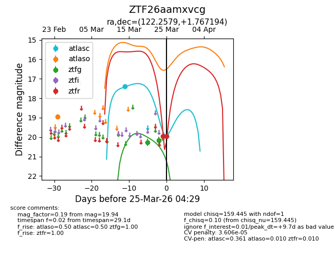
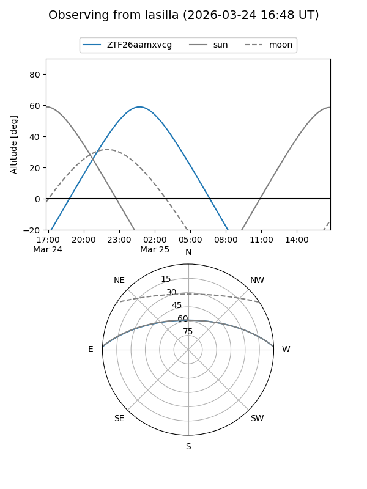
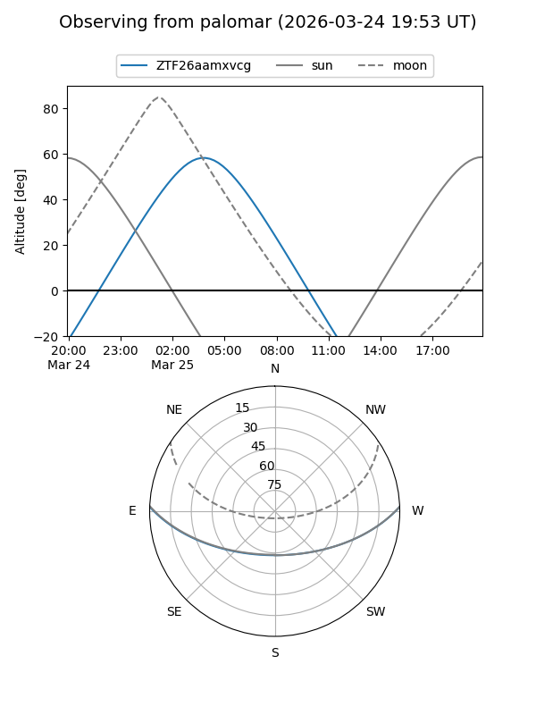
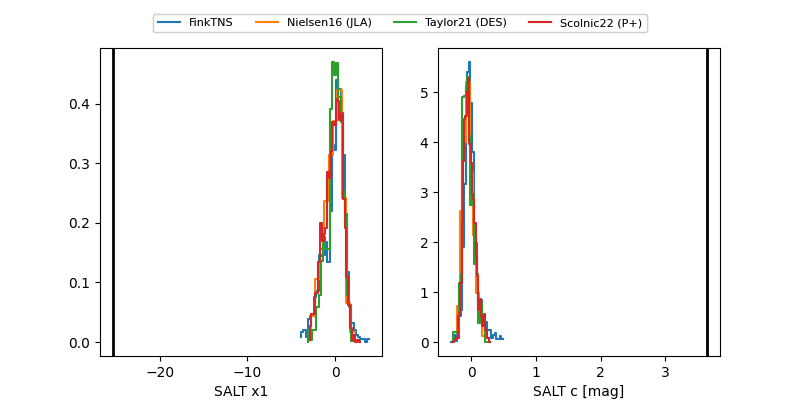

ZTF26aamxvcg
Target ZTF26aamxvcg at 2026-03-25 04:31
Aliases and brokers:
FINK: link
Lasair: link
ALeRCE: link
alt names
ZTF26aamxvcg (ztf,fink_ztf)
Coordinates:
equatorial (ra, dec) = 122.2579,+1.76719
equatorial (HMS+DMS) = 08:09:01.90,+01:46:01.90
galactic (l, b) = (220.4206,+18.03019)
Flags:
likely cv
Photometry:
last atlasc=17.40, atlaso=18.94, ztfg=20.18, ztfr=19.94
1 atlasc, 1 atlaso, 2 ztfg, 2 ztfr detections
Lightcurve

Visibility


Additional plots
